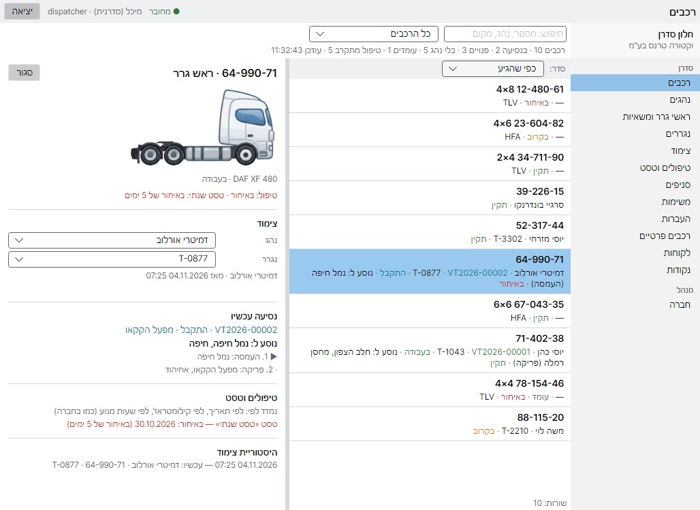
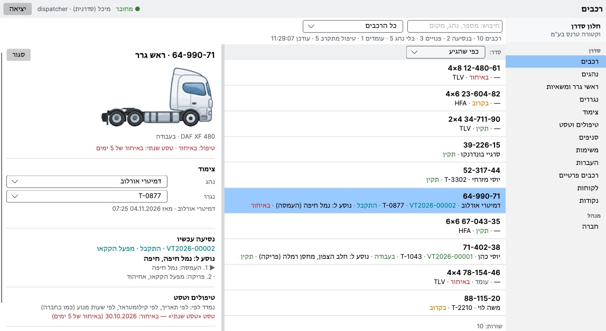
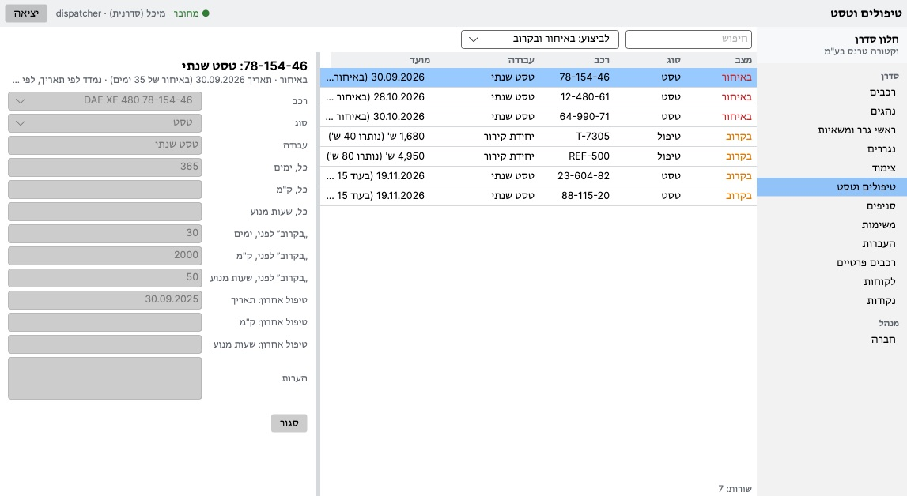
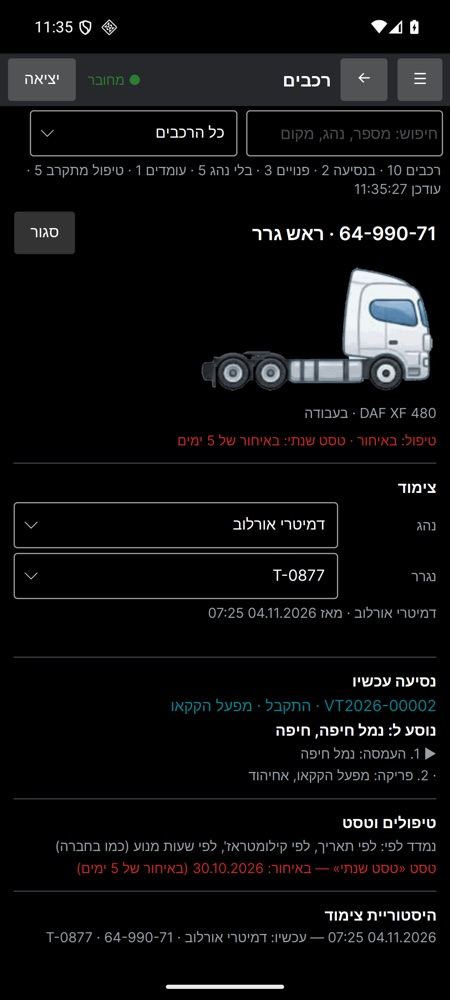

שרת משלכם בחברה, חלון סדרן ואפליקציית VecturaBook אצל הנהגים — עובדים יחד. נהגים, משאיות, נגררים, צימודים, נסיעות, סניפים, טיפולים ומועדים — במקום אחד, על המחשבים שלכם.
כתבו לנופועל על מחשב או שרת שלכם — Windows או Linux. הנתונים נשארים בחברה, לא בענן של מישהו אחר.
תוכנה אחת למשרד ולדרך: Windows, Mac ואנדרואיד. רשימה חיה של המשאיות: מי נוהג במה ולאן נוסעים.
מי בעבודה ומי לא, איזו משאית ואיזה נגרר יש לכל נהג עכשיו, והיסטוריה — מי נהג במה.
ראשי גרר, משאיות ורכבים פרטיים. הציור לפי תצורת הסרנים האמיתית (4×2, 6×4, 8×4…), עם קילומטראז' ושעות מנוע.
כל נגרר לפי סרנים ומרכב: איפה הוא עומד, לאיזו משאית הוא מחובר, מה מתקרב אצלו.
נהג + משאית + נגרר כיחידה אחת. החלפה תוך כדי עבודה, וכל שינוי נשמר בהיסטוריה.
משימות עם נקודות העמסה ופריקה. המצב מגיע מהטלפון של הנהג: התקבל, בדרך, נפרק.
כל סניף מנהל את המשאיות והאנשים שלו; סניפים אחרים גלויים לקריאה בלבד.
טיפול וטסט לפי תאריך, קילומטרים או שעות מנוע. מה שעבר מועדו — ראשון, ו„בקרוב” — התראה מראש.
VecturaBook Pro מושלם לעבודה של חברה מסוימת: סוגי המטען שלכם, המסמכים שלכם, הכללים שלכם לנהגים ולסניפים. מה שצריך — מתווסף, מה שלא צריך — לא מפריע.
אפשר לשנות בשבילכם את הלשוניות, השדות, הכיתובים, סדר העמודות ומראה החלון. צילומי המסך למטה הם נקודת התחלה, לא צורה קבועה.
נהגים, משאיות, נגררים, מועדים והיסטוריה מועברים מהמערכת הקודמת שלכם — טבלאות Excel, תוכנה ישנה או מסד נתונים. מתחילים עם הנתונים שלכם, לא ממסך ריק.
צילומי מסך של הגרסה הנוכחית על נתוני הדגמה. הממשק מותאם לכל לקוח — מה שרואים כאן משתנה לפי החברה שלכם.




ספרו לנו כמה משאיות וסניפים יש לכם ובמה אתם עובדים היום. נענה במייל.
germormdev@gmail.com